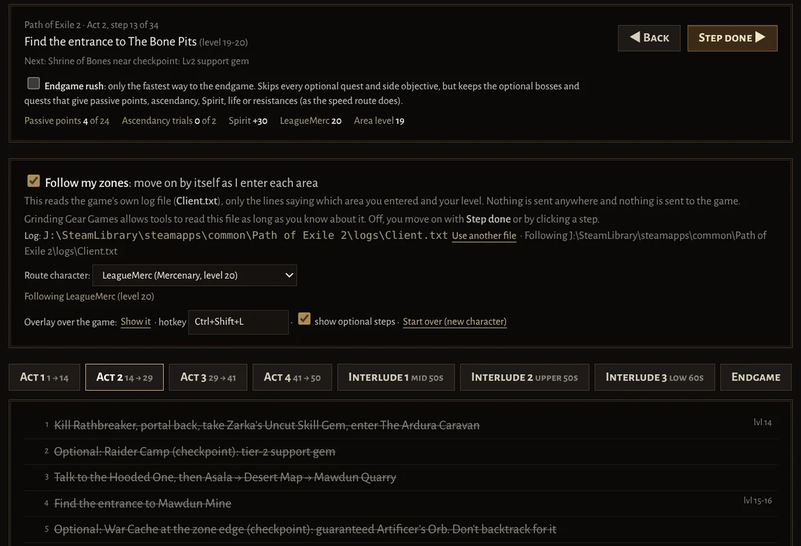

Free item upgrade checker for Path of Exile 2 and Path of Exile 1
Is it really an upgrade? Path of Building decides.
Hover an item and press F2. PoE Upgrade Checker swaps it into your Path of Building build and tells you what it really does to your damage, effective HP and resistances. Then it finds a better one on the trade site, inside your budget.
Windows 10/11 · Linux (experimental, Steam/Proton) · PoE2 and PoE1 · Free and open source · Updates itself
How it works, in game
-
Load your build
Paste your Path of Building export or a pobb.in link: Path of Building 2 for PoE2, Path of Building Community for PoE1. Any class, any skill. Your gear slots fill in from it.
-
Hover and press F2
The verdict appears next to the item: Upgrade, Sidegrade, Loses resistance… with exactly what changes, and whether to keep, sell or vendor it.
-
Find a better one
One click searches the official trade site, weighted by what each stat is worth to your build, and judges every listing.
Never trade away what matters
An item that caps your lightning resistance but drops your minion damage by 20% isn't an upgrade, however good the numbers look. Items that cost you a resistance or your damage get a red verdict and go to the bottom of every search.
- Resistances first: items that cap one you're short of go to the top.
- Never lose damage: a big damage loss is flagged, whatever else it adds.
- Spirit, reservation and attributes: it warns before your minions, auras or gear stop working.
- Chaos Inoculation is recognised, and chaos resistance ignored.

Everything in one Path of Exile overlay
- Judged by Path of Building
- The app bundles Path of Building's calculation engine and runs it on your build, so verdicts know your passive tree, gems and configuration. Rings, jewels and flasks are tried in each slot they fit.
- Trade search that knows your build
- Find upgrades, same stats or better, craftable bases, or a custom search. Results open in the app, each listing judged, with Travel to hideout and a ready whisper. Skip corrupted items, show one listing per seller, and run your last 30 searches again in one click.
- Where to spend your divines
- Every slot searched in your price range and ranked by how much better your build gets per divine, plus pairs of items that cap your resistances together. Set an alert for the next good deal.
- Price check, with history
- F2 on currency, cards, gems or uniques shows the poe.ninja price and the last 7 days. F3 prices anything on its own, rares, waystones and tablets from the trade site: every listing is compared with your item, so better ones don't push your price up, your own listing is left out, and when nothing listed is close you get a range, not a made-up number. Tell it Too low or Too high and it gets tuned on real checks.
- Map and waystone check
- DANGER, CAREFUL or FINE for your build: max resistance and recovery mods are worked out by Path of Building, Thorns and the rest checked against what your build does.
- Keep, sell or vendor
- A one-line answer under every item, from its verdict and its price. Selling? It suggests a listing price just under poe.ninja and copies the price note for your stash tab.
- Loot filter from your build
- Adds a section to your own filter that highlights rares with the mods Path of Building values most for each slot, and the bases you wear.
- Character sheet and alerts
- Your whole character as Path of Building calculates it, damage per hit included, and notifications when a saved search gets new listings, paced to respect the trade site's limits.
- Built for playing both games
- It knows whether you're in PoE2 or PoE1 and keeps characters, league and prices for each, Standard included. Compact popup you can drag anywhere, text size and colour-blind options.
- Gem check
- F2 on a gem you use: Path of Building tries it at that level and quality in your build and shows the DPS and effective HP change, so you know if it's worth keeping.
- Can you take the hit? (PoE1)
- The boss check shows how many hits of each big boss attack you survive, Shaper to Maven, at Pinnacle and Uber, using Path of Building's boss presets.
- Search strings and leveling mode
- Paste-ready searches for vendors and your stash (movement speed, the resistances you're short of) and for maps without the mods you marked dangerous. Leveling? Only see gear you can wear.
- Best anoint and instil
- Path of Building tries every notable that can go on your amulet and lists the best for your build, with the damage and effective HP each adds and the oils or distilled emotions it takes.
- Mod tiers at a glance
- Every mod with its tier and how high it rolled, in the popup and in trade results, so you can see what's top tier and what's worth crafting over.
- League start route
- The campaign for both games step by step, with every passive point, trial and permanent reward counted, and every optional quest marked. A small overlay over the game shows the step you're on; switch on Follow my zones and it moves on by itself. Or turn on Endgame rush for only the fastest way to maps. Switching to your main for maps doesn't touch your leveller's route.
- Your build stays in sync
- Import from pobb.in and update with one click, or link the build file you save in Path of Building and the app follows it every time you save.

Path of Exile 1 support
The same F2 check works in PoE1, with Path of Building Community and your own build. It checks what PoE1 players care about:
- Links: an item with fewer links than the gems you use in that slot is flagged.
- Flasks are tried in your flask slots, and life and mana flasks compared on recovery.
- Anoints: an amulet without yours is called out, so you know to anoint it again.
- Prices in chaos and divines from poe.ninja, and the PoE1 trade site, league or Standard.
New in 0.5.1. Still marked beta in the app while it gets more testing.
League start route
The whole campaign for both games, step by step, in the app and in a small overlay over the game (Ctrl+Shift+L).
- Every reward counted: passive points, trials and ascendancy, resistances and Spirit as you get them.
- Follows your zones if you switch it on: it reads only the area and level lines of the game's log, and nothing is sent anywhere.
- Optional quests are all listed, or turn on Endgame rush for just the fastest way to maps, every passive point included.
- Keeps your characters apart: only the character the route is for moves it on, so mapping on your main doesn't touch your leveller's route.
New in 0.5.2. Routes for PoE1 3.29 and PoE2 0.5.5, from exile-leveling and Splitstone; updated for 3.30 and 1.0 once their campaign changes are known.



Frequently asked questions
Is it safe to use? Can it get me banned?
It's built to stay within the rules for third-party tools: it never reads game memory or changes game files (the only one it can read is the game's log, and only if you switch on Follow my zones for the league-start route), and its only input to the game is one Ctrl+C per key press, the same as copying an item yourself. Trade searches use the official trade site, slowing down whenever the site asks. It's a fan project, not affiliated with or endorsed by Grinding Gear Games.
Does it work with Path of Exile 1?
Yes, since version 0.5.1 (still marked beta while it gets more testing). It uses Path of Building Community for PoE1 and checks links, flasks and anoints too. It knows which game you're playing and keeps separate characters, leagues and prices for each.
Do I need Path of Building?
You don't need to install it: the app bundles Path of Building's calculation engine. You paste your Path of Building export or a pobb.in link once, and every item is judged with your passive tree, gems and configuration. In PoE2 it can also give a rough gear score without a build.
How do I price check items in Path of Exile 2?
Hover the item and press F3 (or F2 for the full check). Currency, gems, cards and uniques show their poe.ninja price with the last 7 days. Rares, waystones and tablets are priced from the trade site, on listings compared with your item: better ones and your own listing are left out, and when nothing listed is close you get a range instead of one made-up number.
Does it work on Linux?
There's a Linux AppImage (experimental) that works with the game running through Steam and Proton. Windows 10 and 11 are fully supported.
Is it free?
Yes. It's free and open source on GitHub, with no account and no ads, and it updates itself.
Fair play and privacy
Nothing touches the game. It never reads game memory or injects anything. Its only input to the game is one Ctrl+C per key press, the same as copying an item yourself.
Your data stays on your PC. It talks to the official trade site, poe.ninja's prices (cached on this site) and GitHub (for updates). Path of Building runs locally. This website counts visits with Cloudflare Web Analytics, which uses no cookies.
Anonymous usage count. So we know how many people use it, the app tells this site a random install number, its version, Windows or Linux, and which game you played that day, a few times a day. No account, items or builds, and no IP addresses are kept. Turn it off in Settings or the first-run guide.
Fan-made. Not affiliated with or endorsed by Grinding Gear Games. Free and open source on GitHub.
Stop guessing. Press F2.
Download PoE Upgrade CheckerIn the game, set Options → Graphics to Windowed Fullscreen so the overlay can draw over the game. The first-run guide does the rest.
Stuck or found a bug? Email support@poe2upgrade.com or open an issue on GitHub. Contributions are welcome.